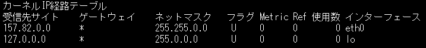
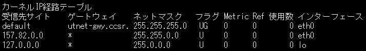

最終更新日 2005/09/01
ここでは、ネットワーク接続の設定に必要な情報とネットワーク設定の方法について紹介しています。
目次
OSをインストールした後、ワークステーションやPCをネットワークにつなげるにはソフトの面で次の設定を行う必要があります。設定を行う前に念のためLANケーブルなどが正常に接続されていることを確認してください。ハブのリンクランプが点灯していれば、HUBとPCやワークステーションの間の接続は大丈夫だと思います。WindowsでDHCPを利用する場合(端末として利用する場合には通常、
DHCPを利用すると思いますが)は自動で設定してくれますので以下のような作業は必要ありません。CCSRの場合の設定を 次のページ(内部向け)に載せましたのでご参照下さい。
IPアドレスの設定
自分自身のIPアドレスのことです。固定IPを使用する場合には設定が必要です。DHCPを利用する場合には設定しないで下さい(この後の設定も必要ありません)。ifconfig コマンドを使用(一時的な変更)するか /etc/hosts やネットワークインターフェースの設定を書き換え再起動することで変更できます。
サブネットマスクの設定
同じネットワーク内のコンピュータでは共通のサブネットマスクを使います。ネットワーク管理者にお問い合わせ下さい。
デフォルトルータ(ゲートウェイ)の設定
コンピュータからネットワークにパケットを送信するときの送信先を設定します。デフォルトルータが設定されていなければサブネットの外に出ることはできません。ルータのIPはネットワーク管理者にお問い合わせ下さい。
DNSサーバの設定
DNSアドレス(atmos.ccsr.u-tokyo.ac.jp のようなアドレス)とIPアドレス(192.168.1.22のようなアドレス)の対応表を持っているサーバのIPを設定します。ネットワーク管理者にお問い合わせ下さい。
ブロードキャストアドレス
サブネット全体にブロードキャストする場合のアドレスです。IPアドレスとサブネットワークマスクから計算できます(2進数にしたIPアドレスと2進数にして反転したサブネットワークマスクのOR演算)。特に設定の必要はありません。
ネットワーク番号
IPアドレスとサブネットワークマスクから計算できます(2進数にしたIPアドレスとサブネットワークマスクのAND演算)。特に設定の必要はありません。
ページの先頭へ
2.1 GUIを使う方法
network configuration tool ( /usr/bin/network-admin や /bin/linuxconf等 )を使います。
設定がうまくいっていないと起動したときに文字化けすることがあるのでそのときは
$ setenv LANG C
としてから network-admin か linuxconf コマンドを起動します。
これらのツールを使ってDNSサーバ、デフォルトゲートウェイ、IPアドレス、サブネットマスク、/etc/hosts の設定を行います。
DHCPを利用して設定を取得する場合にはGUIでDHCPを使用するにチェックしてください。
2.2 設定ファイルを編集する方法
ここでは、固定IPの場合のネットワーク接続の設定方法について記述しています。DHCPクライアントとする場合には必要ありません。
/etc/host.conf
/etc/hostsに記述されたホストテーブルを先に参照するか、DNSサーバを先に参照するかを指定します。通常は/etc/hostsを先にします。
-------------------------------------------------
order hosts, bind
-------------------------------------------------
/etc/hosts
この中にローカルホストの設定、ホスト名とIPアドレス、ホスト名のエイリアスの設定を記述します。ローカルホストの記述があれば問題ありませんが、/etc/hostsを先に参照するように指定した場合、このファイルに記述したホストへはDNSサーバに問い合わせることなく接続できるので、記述したほうが接続が早くなります。
-------------------------------------------------
127.0.0.1 localhost.localdomain localhost
192.168.1.22 atmos.ccsr.u-tokyo.ac.jp atmos
-------------------------------------------------
/etc/resolv.conf
/etc/hosts にホスト名とIPアドレスの対応が書かれていない場合、次にDNSサーバに問い合わせに行きます。その時に参照するDNSサーバのIPアドレスを記述します。このファイルに記述した順に問い合わせにいくので、セカンダリDNSサーバがある場合にはそれも記述しておきます。
/etc/nsswitch.conf の設定
hosts: files → hosts: files dns のように変更します(しなくても使えるようです)。NIS+を使う場合にはhosts: files dns nisplus nis のように設定します。
/etc/sysconfig/network の編集
このファイルでホスト名、ゲートウェイの編集を行うことができます。ここでは、デバイスが1つの場合を想定していますが、ゲートウェイデバイス名は、eth0です。
-------------------------------------------------
NET WORKING = YES
HOSTNAME = atmos.ccsr.u-tokyo.ac.jp ホスト名の設定
GATEWAY = 192.168.1.1 ゲートウェイの設定
GATEWAYDEV = eth0 ゲートウェイデバイス名
-------------------------------------------------
/etc/conf.modules
この中にネットワークインターフェースを記述します。PCIバスなら基本的に自動認識されるようなので特に編集の必要はないと思います。
alias eth0 via_rhine
/etc/sysconfig/network-scripts/ifcfg-eth0
-------------------------------------------------
DEVICE = eth0 ネットワークインターフェース名
USERCTL = no ユーザがデバイスを操作できないようにする。
ONBOOT = yes ブート時にデバイスを活動させる。
BOOTPROTO = none ブート時のプロトコル設定
BROADCAST = 192.168.1.255 ブロードキャストアドレス
NETMASK = 255.255.255.0 サブネットマスク
IPADDR = 192.168.1.22 IPアドレス
-------------------------------------------------
2.3 一時的に設定を変更する方法
netstat -rn やroute コマンドを使って現在の設定を調べます。この方法はネットワークケーブルやネットワークカードなどのハードウェアに問題がないのに、あるコンピュータのみがネットワークに接続できない場合に、そのコンピュータのネットワーク設定をテストするためにも利用できます。route コマンドでは、例えば次のように表示されます。
$ route
---------------------------------------------------------------------

---------------------------------------------------------------------
この場合、受信先サイトに default がないためゲートウェイの設定が行われていません。
次に routed が起動しているか調べます。
$ ps -ef | grep routed
何も表示されないか grep routed のみが表示されたら routed は起動していません。小規模なLANを除けばあまりroutedを起動することはないと思います。CCSRの場合はルータにパケットを送信する方法を使うのでroutedを起動する必要はありません。
ネットワークの設定が行われていない場合、
$ route add -net default netmask 255.255.255.0 gw 192.168.1.1 dev eth0
のように設定します。設定が追加されたか確認します。
$ route
---------------------------------------------------------------------

---------------------------------------------------------------------
受信先サイトに default が追加され、デフォルトゲートウェイとサブネットマスクも設定されたことが分かります。
ページの先頭へ
/etc/hosts の設定
IPパケットの送信先としてhost名を指定した場合、デフォルトではまずこのファイルを参照してhost名とIPアドレスの対応を調べます。LANを形成していてLANの中にDNSサーバがない場合には、LANの中に存在するhost名とIPアドレスを全てこの中に記述します。DNSサーバと通信できる状態であれば
-------------------------------------------------
127.0.0.1 localhost loghost atmos
192.168.1.22 atmos.ccsr.u-tokyo.ac.jp atmos
-------------------------------------------------
のように自分自身のhost名とIPのみを記述しても問題なく動作します(DNSサーバと通信する分遅くなりますが)。
/etc/resolv.conf の設定
/etc/hosts にホスト名とIPアドレスの対応が書かれていない場合、次にDNSサーバに問い合わせに行きます。その時に参照するDNSサーバのIPアドレスを記述します。このファイルに記述した順に問い合わせにいくので、セカンダリDNSサーバがある場合にはそれも記述しておきます。
-------------------------------------------------
domain ccsr.u-tokyo.ac.jp (ホスト名を検索するドメイン名)
nameserver 192.168.1.3 (プライマリDNSサーバ)
nameserver 192.168.11.10 (セカンダリDNSサーバ)
-------------------------------------------------
/etc/nsswitch.conf の設定
hosts → hosts files dns のように変更します(しなくても使えるようです)。NISを使う場合にはhosts files dns nis 、NIS+を使う場合にはhosts files dns nisplus nisのようにします。
-------------------------------------------------
hosts: files dns (設定ファイルを検索後、DNSサーバに問い合わせる)
-------------------------------------------------
/etc/netmasks の設定
サブネットマスクの設定をこのファイルに記述します。
-------------------------------------------------
192.168.1.22 255.255.255.0
-------------------------------------------------
/etc/nodename の設定
起動時に表示されるhost名はこのファイルの中身を参照しています。ここにはhost名のみを記述します。
-------------------------------------------------
atmos
-------------------------------------------------
/etc/defaultrouter の記述
ルータのIPアドレスを記述します。LANを形成していてLANからWANに接続したい場合にはLAN の中でのルータのIPを記述します。
-------------------------------------------------
192.168.1.1
-------------------------------------------------
/etc/hostname.hme0 などインターフェースの設定
このファイルの hme0 の部分がネットワークインターフェースに当たり、インターフェースに合わせてファイル名を変える必要があります。インターフェース名はOSやネットワークの種類によって変わります。Solarisの場合、100Mbpsならhme0, eri0、1Gbpsならce0です。どのインターフェースが利用できるか確かめるには、
$ ifconfig hme0 plumb
のようにします。間違っていればエラーメッセージが出るので分かると思います。このファイルの中には自分自身のIPアドレスを記述します。
-------------------------------------------------
192.168.1.22
-------------------------------------------------
これらの設定が終わればネットワークにつなげることができます。再起動してnetscapeが見れるか、$ netstat -rn でインターフェースhme0にdefaultの設定が追加されたか確認します。
* この方法でいくつか試してもインターフェース名が分からなかったら、一度OSをシャットダウンし、
ok! show-nets
でネットワークデバイスを表示します(ここで出てくるのはOSで設定する名前とは別なので注意)。
ネットワークデバイスが1つの場合(Ethernetの口が１つの場合)は
ok! cd デバイス名
ok! .properties
とし、出力からpci-ceのような行を探します。この場合、OSで設定するデバイス名はce0となります。
デバイスが複数ある場合には同じ作業を繰り返します。pci-ceが複数のデバイスで表示された場合にはce0,ce1,・・・のような順でデバイス名が利用可能ということが分かります。
ページの先頭へ
Tru64ではGUIを使ってネットワークの設定を行うことができます。
$ checklist
でGUIを起動し、カスタムセットアップを選びます。次の画面でネットワークの設定とDNSの設定を起動し、IPアドレス、サブネットマスク、デフォルトゲートウェイ、DNSサーバの設定、/etc/hosts の編集を行います。
ページの先頭へ
SuSE LinuxではWindowsに似たGUI(yast2)を使ってネットワーク設定を行うことが可能です。
$ yast2
で起動し、設定を行います。
* このページではGUIの使い方については説明しませんのでご了承下さい。
ページの先頭へ
同じドメインに2種類のネットワークがあり、それぞれ別のルータに接続されていた環境で設定を行ったことがありました。一時期、マシンの接続先を別のルータにつながるHUBに変更し、ホスト名は変更せずにそちら側のIPに変えたことがありました。その間ネットワークが非常に遅く、とても実用に耐えられる状態ではありませんでした。そのマシンは固定IPを持っておりDNSサーバにはその固定IPが記述されていますが、マシン自体のホスト名を変えずにIPだけをDNSのIPと違うものに変えたため、そこで矛盾が起こりnetworkが混乱したようです。
ネットワーク接続の設定の際には設定ファイル間の矛盾だけでなく、自分が所属しているネットワークの設定との矛盾もないか確認するようにしましょう。
同じルータ(ルータ1)に接続されたマシンからはloginできるのに、他のルータ(ルータ2)に接続されたマシンからは全く接続できない状態だったマシンがありました。その2つのルータの間の通信がファイアウォールでブロックされるということはありません。
正常に接続できない原因として、まずネットワークの設定を疑いましたが、全くおかしな所は見付かりませんでした。次にネットワークの状態を調べましたが、そのマシンからルータ2のマシンにpingをすることはできてもルータ2上のマシンからのpingは届かない状態でした。ただ、そのマシンから一度ルータ2上のマシンやルータ1にpingをすると、ルータ2上のマシンからのpingが通るようになり、暫くの間は正常にloginできました。ネットワークに混乱するIPを持ったマシンがあることを疑いましたが、案の定、以前にそのマシンのIP と同じIPに設定したルータが全く使われないままLANケーブルに接続されていました。
ページの先頭へ